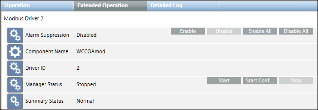

Modbus Driver
A Modbus driver is needed to connect modbus devices with the management platform. The management platform starts with no Modbus driver defined. In the Engineering mode, you must add it as needed, from the Object Configurator tab under Management System > Server > Main Server > Drivers, when you select Management View in System Browser.

From the System Browser tree, when you select the Modbus Driver node (in Engineering/Operating mode), the Operation/Extended Operation tabs display the Start and Stop commands that you can use to start and stop the driver. The Stop command is only enabled when the driver is running; it is disabled if the driver is not running or an operation is in progress.
For the main server, the default project provides a Drivers folder. However, if the management platform you configure includes FEPs, you must configure FEP to add a FEP station. Under the FEP station, you must then add a Drivers folder for adding a driver. You can only add a driver in Engineering mode.
After creating the Modbus driver, you must start it and link it to a Modbus network.
To delete the Modbus driver, you must first delete all the Modbus networks attached to the driver. Once you delete the respective networks, you can delete the driver by selecting the Object Configurator tab and clicking Delete .
.
You can have 10 drivers running simultaneously per server. A maximum of 35000 points can be associated with each driver.